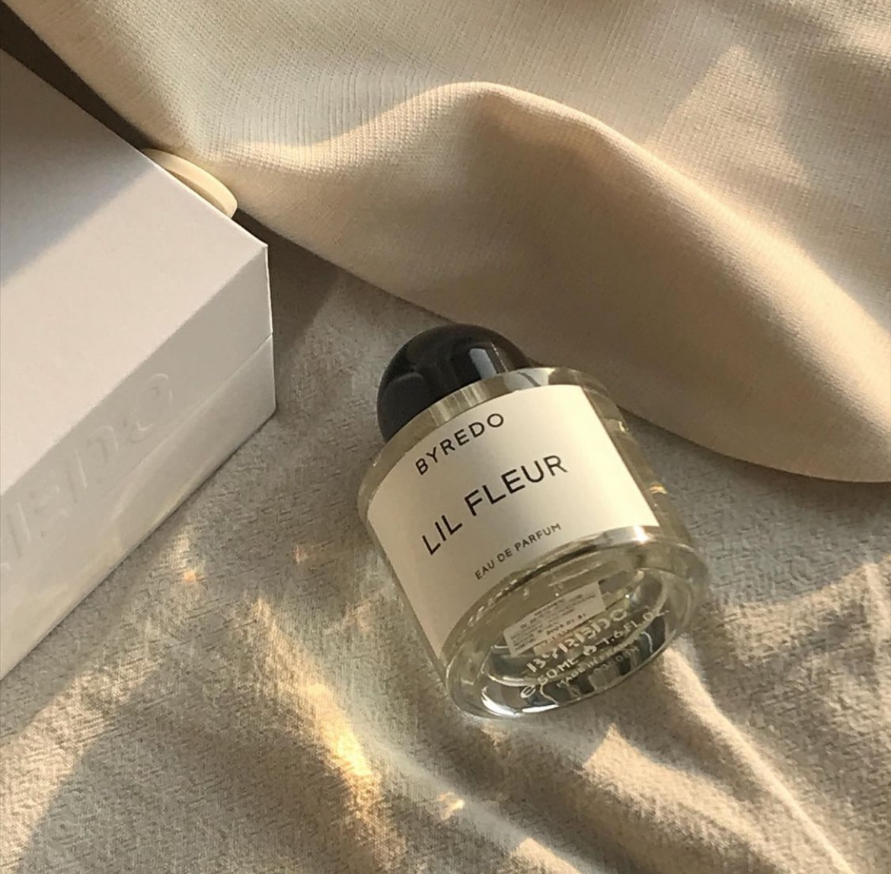
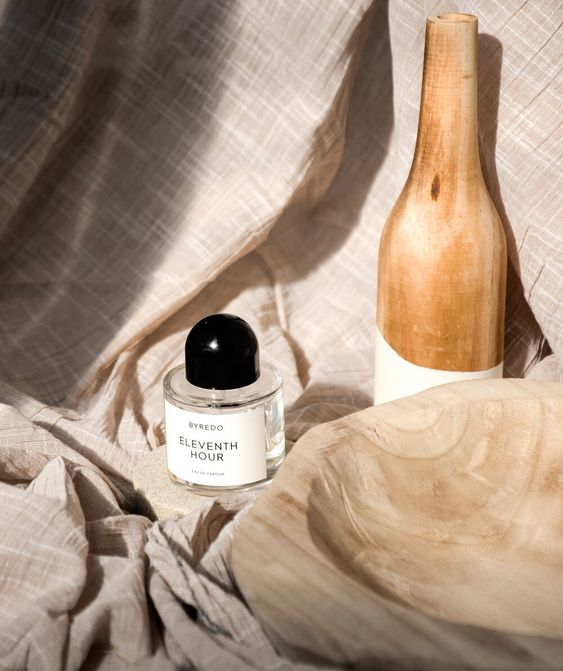

BYPEDO
PERFUME
We invite you to try all five fragrances in our debut
collection, (Connecetion to Self). This collection was
inspried by the houres that have taken me to myself,
others, nature and the world around me through
unspoken and invisible languages. May it serve as a
meaningful metaphor to you.
$90
Ben Gorham
A native Swede, born to an lndian mother and a Canadian Father,
Ben grew up in Toronto, New York and Stockholm.
He graduated from the stockholm art school with a degree in fine
arts, but a chance meeting with perfumer pierre Wulff convinced
him that he'd rather create fragrances than paintings.
With no formal training in the field, Gorham, 31 Years old,
sought out the services of world renowned perfumers Olivia
Giacobetti and Jerome Epinette, explaining his olfactory desires
and letting them create the compositions.
As an outsider in the bequty industry, Ben is somewhat of an
anomaly and has been recognized for his personal style and
connection to fashion and art in several international magazines
such as French Vogue, Vanity Fair, Elle,
V Magazine and Fantastic Man to name a few.